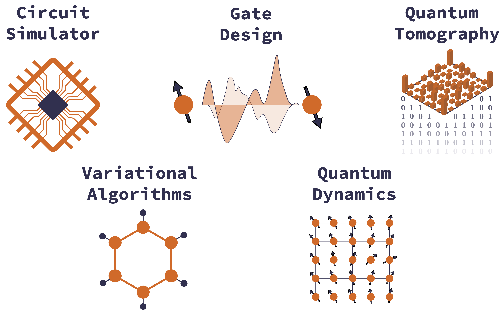

PLEASE NOTE THIS IS PRE-RELEASE SOFTWARE
PastaQ.jl: design and benchmarking quantum hardware
PastaQ.jl is a Julia software toolbox providing a range of computational methods for quantum computing applications. Some examples are the simulation of quancum circuits, the design of quantum gates, noise characterization and performance benchmarking. PastaQ relies on tensor-network representations of quantum states and processes, and borrows well-refined techniques from the field of machine learning and data science, such as probabilistic modeling and automatic differentiation.

Install
The PastaQ package can be installed with the Julia package manager. From the Julia REPL, type ] to enter the Pkg REPL mode and run:
julia> ]
pkg> add PastaQPastaQ.jl relies on the following packages: ITensors.jl for low-level tensor-network algorithms, Optimisers.jl for stochastic optimization methods, Zygote.jl for automatic differentiation, and Observers.jl for tracking/recording metrics and observables. Please note that right now, PastaQ.jl requires that you use Julia v1.6 or later.
Documentation
- STABLE – documentation of the most recently tagged version.
- DEVEL – documentation of the in-development version.
Examples
We briefly showcase some of the functionalities provided by PastaQ.jl. For more in-depth discussion, please refer to the tutorials folder.
Simulating quantum circuits
The vast majority of tasks related to designing and benchmarking quantum computers relies on the capability of simulating quantum circuits, built out of a collection of elementary quantum gates. In PastaQ, a quantum gates is described by a data structure g = ("gatename", support, params), consisting of a gate identifier gatename (a String), a support (an Int for single-qubit gates or a Tuple for multi-qubit gates), and a set of gate parameters, such as rotations angles, whenever needed. A comprehensive set of elementary gates is provided, including Pauli operations, phase and T gates, single-qubit rotations, controlled gates, Toffoli gate and others. Additional user-specific gates can be easily added to this collection. Once a circuit is defined, it can be executed using the runcircuit function:
using PastaQ
# a quantum circuit in PastaQ
gates = [("X" , 1), # Pauli X on qubit 1
("CX", (1, 3)), # Controlled-X on qubits [1,3]
("Rx", 2, (θ = 0.5,)), # Rotation of θ around X
("Rn", 3, (θ = 0.5, ϕ = 0.2, λ = 1.2)), # Arbitrary rotation with angles (θ,ϕ,λ)
("√SWAP", (3, 4)), # Sqrt Swap on qubits [2,3]
("T" , 4)] # T gate on qubit 4
# run the circuit
ψ = runcircuit(gates)
# returns the MPS at the output of the quantum circuit: `|ψ⟩ = Û|0,0,…,0⟩`
# first the gate ("X" , 1) is applied, then ("CX", (1, 3)), etc.
# ------------------------------------------------------------------
# Output:
# ITensors.MPS
# [1] ((dim=2|id=456|"Qubit,Site,n=1"), (dim=1|id=760|"Link,n=1"))
# [2] ((dim=1|id=760|"Link,n=1"), (dim=2|id=613|"Qubit,Site,n=2"), (dim=1|id=362|"Link,n=1"))
# [3] ((dim=2|id=9|"Qubit,Site,n=3"), (dim=2|id=357|"Link,n=1"), (dim=1|id=362|"Link,n=1"))
# [4] ((dim=2|id=980|"Qubit,Site,n=4"), (dim=2|id=357|"Link,n=1"))In this next example, we create a circuit to prepare the GHZ state, and sample projective measurements in the computational basis. We then execture the circuit in the presence of noise, where a local noise channel is applied to each gate. A noise model is described as noisemodel = ("noisename", (noiseparams...)), in which case it is applied to each gate identically. To distinguish between one- and two-qubit gates, for example, the following syntax can be used: noisemodel = (1 => noise1, 2 => noise2). For more sophisticated noise models (such as gate-dependent noise), please refer to the documentation.
using PastaQ
using ITensors
# number of qubits
n = 20
# manually create a circuit to prepare GHZ state,
# or use built-in call `circuit = ghz(n)`
circuit = Tuple[("H", 1)]
for j in 1:n-1
push!(circuit, ("CX", (j, j+1)))
end
# run the circuit to obtain the output MPS
hilbert = qubits(n)
ψ = runcircuit(hilbert, circuit)
# sample projective measurements in the computational basis
@show getsamples(ψ, 5)
# define a noise model with different error rates for
# one- and two-qubit gates
noisemodel = (1 => ("depolarizing", (p = 0.01,)),
2 => ("depolarizing", (p = 0.05,)))
# run a noisy circuit
ρ = runcircuit(hilbert, circuit; noise = noisemodel)
@show fidelity(ψ, ρ)
@show getsamples(ρ, 5)
# quantum processes can also be obtained.
# unitary MPO
U = runcircuit(circuit; process = true)
# Choi matrix
Λ = runcircuit(circuit; process = true, noise = noisemodel)
# ------------------------------------------------------------------
# Output:
# 5×20 Matrix{Int64}:
# 1 1 1 1 1 1 1 1 1 1 1 1 1 1 1 1 1 1 1 1
# 1 1 1 1 1 1 1 1 1 1 1 1 1 1 1 1 1 1 1 1
# 0 0 0 0 0 0 0 0 0 0 0 0 0 0 0 0 0 0 0 0
# 0 0 0 0 0 0 0 0 0 0 0 0 0 0 0 0 0 0 0 0
# 1 1 1 1 1 1 1 1 1 1 1 1 1 1 1 1 1 1 1 1
#
# fidelity(ψ, ρ) = 0.40840853095498975
#
# 5×20 Matrix{Int64}:
# 1 1 1 1 1 1 0 0 0 0 0 0 1 0 0 0 1 1 1 1
# 1 1 1 0 0 0 0 0 0 0 0 0 0 0 0 0 0 0 0 0
# 0 0 0 0 0 0 0 0 0 0 0 0 0 0 1 1 1 1 1 1
# 0 0 0 0 0 0 0 0 0 0 0 0 1 1 1 1 1 1 1 1
# 1 1 1 1 1 1 1 1 1 1 1 1 1 1 1 1 1 1 1 1There is a number of built-in circuits available, one examples being random circuits. In the following, we generate a one-dimensional random quantum circuits built out with a brick-layer geometry of alternative CX gates and layers of random single-qubit rotations:
n = 100
depth = 20
circuit = randomcircuit(n; depth = depth,
twoqubitgates = "CX",
onequbitgates = "Rn")
@time ψ = runcircuit(circuit; cutoff = 1e-10)
@show maxlinkdim(ψ)
# ------------------------------------------------------------------
# Output:
# 89.375383 seconds (5.25 M allocations: 64.781 GiB, 9.98% gc time)
# maxlinkdim(ψ) = 908Variational quantum eingensolver
We show how to perform a ground state search of a many-body hamiltonian $H$ using the variational quantum eigensolver (VQE). The VQE algorithm, based on the variational principle, consists of an iterative optimization of an objective function $\langle \psi(\theta)|H|\psi(\theta)\rangle/\langle\psi(\theta)|\psi(\theta)\rangle$, where $|\psi(\theta)\rangle = U(\theta)|0\rangle$ is the output wavefunction of a parametrized quantum circuit $U(\theta)$.
In the following example, we consider a quantum Ising model with 10 spins, and perform the optimization by leveraging Automatic Differentiation techniques (AD), provided by the package Zygote.jl. Specifically, we build a variational circuit using built-in circuit-contruction functions, and optimize the expectation value of the Hamiltonian using a gradient-based approach and the LBFGS optimizer. The gradients are evaluated through AD, providing a flexible interface in defining custom variational circuit ansatze.
using ITensors
using PastaQ
using Printf
using OptimKit
using Zygote
N = 10 # number of qubits
J = 1.0 # Ising exchange interaction
h = 0.5 # transverse magnetic field
# Hilbert space
hilbert = qubits(N)
# define the Hamiltonian
os = OpSum()
for j in 1:N-1
os .+= (-J, "Z",j,"Z",j+1)
os .+= (-h, "X", j)
end
os .+= (-h, "X",N)
# build MPO "cost function"
H = MPO(os, hilbert)
Edmrg = -9.7655034665
@printf("Exact energy from DMRG: %.8f\n", Edmrg)
# layer of single-qubit Ry gates
Rylayer(N, θ) =
[("Ry", j, (θ = θ[j],)) for j in 1:N]
# brick-layer of CX gates
CXlayer(N,Π) =
isodd(Π) ? [("CX", (j, j+1)) for j in 1:2:N-1] :
[("CX", (j, j+1)) for j in 2:2:N-1]
# variational ansatz
function variationalcircuit(N, depth, θ⃗)
circuit = Tuple[]
for d in 1:depth
circuit = vcat(circuit, CXlayer(N, d))
circuit = vcat(circuit, Rylayer(N, θ⃗[d]))
end
return circuit
end
depth = 20
ψ = productstate(hilbert)
# cost function
function loss(θ⃗)
circuit = variationalcircuit(N, depth, θ⃗)
U = buildcircuit(ψ, circuit)
return rayleigh_quotient(H, U, ψ; cutoff = 1e-8)
end
# initialize parameters
θ⃗₀ = [2π .* rand(N) for _ in 1:depth]
# run VQE using BFGS optimization
optimizer = LBFGS(maxiter = 500, verbosity=2)
loss_n_grad(x) = (loss(x), convert(Vector, loss'(x)))
θ⃗, fs, gs, niter, normgradhistory = optimize(loss_n_grad, θ⃗₀, optimizer)
@printf("Relative error: %.3E", abs(Edmrg - fs[end]) / abs(Edmrg))
# ------------------------------------------------------------------
# Output:
# Exact energy from DMRG: -9.76550347
#
# [ Info: LBFGS: initializing with f = -0.182090597122, ‖∇f‖ = 2.3297e+00
# [ Info: LBFGS: iter 1: f = -2.157995740330, ‖∇f‖ = 2.4305e+00, α = 1.00e+00, m = 0, nfg = 1
# [ Info: LBFGS: iter 2: f = -2.397853058857, ‖∇f‖ = 4.5561e+00, α = 1.00e+00, m = 1, nfg = 1
# [ Info: LBFGS: iter 3: f = -4.141376142741, ‖∇f‖ = 3.0358e+00, α = 1.00e+00, m = 2, nfg = 1
# [ Info: LBFGS: iter 4: f = -4.850744631864, ‖∇f‖ = 2.7316e+00, α = 1.00e+00, m = 3, nfg = 1
# [ Info: LBFGS: iter 5: f = -5.522683055280, ‖∇f‖ = 2.3480e+00, α = 1.00e+00, m = 4, nfg = 1
# ...
# [ Info: LBFGS: iter 498: f = -9.764686918396, ‖∇f‖ = 9.0752e-04, α = 1.00e+00, m = 8, nfg = 1
# [ Info: LBFGS: iter 499: f = -9.764687006358, ‖∇f‖ = 1.1905e-03, α = 1.00e+00, m = 8, nfg = 1
# Relative error: 8.360E-05Monitored quantum circuits
In this example we simulate a monitored quantum circuit, a circuit composed by entangling unitaries and probabilistic local projective measurements, with a rate $p$. The circuit has a brick-layer structure, where each layer consists of nearest-neighbor two-qubit random unitaries, followed by a layer of randomly-placed projective measurements in the computational basis. In the limit of $p=0$, the system displays a scrambling dynamics, exhibiting a volume-law entanglement entropy. When $p$ grows large, the competition between the entangling unitaries and the (disentangling) projective measurements generates can induce an ''entanglement phase transition" at a critical rate $p_c$, separating a volume law phase (low $p$) from an area-law phase (high $p$).
using PastaQ
using ITensors
using Printf
using LinearAlgebra
using StatsBase: mean, sem
import PastaQ: gate
# define the two measurement projectors
gate(::GateName"Π0") =
[1 0
0 0]
gate(::GateName"Π1") =
[0 0
0 1]
# compute the Von Neumann entanglement entropy at the center bond
# of a linear chain of qubits
function entanglemententropy(ψ₀::MPS)
ψ = normalize!(copy(ψ₀))
N = length(ψ)
bond = N ÷ 2
orthogonalize!(ψ, bond)
row_inds = (linkind(ψ, bond - 1), siteind(ψ, bond))
u, s, v = svd(ψ[bond], row_inds)
S = 0.0
for n in 1:dim(s, 1)
λ = s[n, n]^2
S -= λ * log(λ + 1e-20)
end
return S
end
# build a brick-layer circuit of random unitaries
function entangling_layer(N::Int)
layer_odd = randomlayer("RandomUnitary",[(j,j+1) for j in 1:2:N-1])
layer_even = randomlayer("RandomUnitary",[(j,j+1) for j in 2:2:N-1])
return [layer_odd..., layer_even...]
end
# perform a projective measurement in the computational basis
# at a given site
function projective_measurement!(ψ₀::MPS, site::Int)
ψ = orthogonalize!(ψ₀, site)
ϕ = ψ[site]
# 1-qubit reduced density matrix
ρ = prime(ϕ, tags="Site") * dag(ϕ)
# Outcome probabilities
prob = real.(diag(array(ρ)))
# Sample
σ = (rand() < prob[1] ? 0 : 1)
# Projection
ψ = runcircuit(ψ, ("Π"*"$(σ)", site))
normalize!(ψ)
ψ₀[:] = ψ
return ψ₀
end
# compute average Von Neumann entropy for an ensemble of random circuits
# for a fixed local measurement probability rate `p`
function monitored_circuits(circuits::Vector{<:Vector}, p::Float64)
svn = []
N = nqubits(circuits[1])
for circuit in circuits
# initialize state ψ = |000…⟩
ψ = productstate(N)
# sweep over layers
for layer in circuit
# apply entangling unitary
ψ = runcircuit(ψ, layer; cutoff = 1e-8)
# perform measurements
for j in 1:N
p > rand() && projective_measurement!(ψ, j)
end
end
push!(svn, entanglemententropy(ψ))
end
return svn
end
let
Random.seed!(1234)
N = 10 # number of qubits
depth = 100 # circuit's depth
ntrials = 50 # number of random trials
# generate random circuits
circuits = [[entangling_layer(N) for _ in 1:depth] for _ in 1:ntrials]
# loop over projective measurement probability (per site)
for p in 0.0:0.02:0.2
t = @elapsed svn = monitored_circuits(circuits, p)
@printf("p = %.2f S(ρ) = %.5f ± %.1E\t(elapsed = %.2fs)\n", p, mean(svn), sem(svn), t)
end
end
# ------------------------------------------------------------------
# Output:
# p = 0.00 S(ρ) = 2.96398 ± 2.0E-03 (elapsed = 75.53s)
# p = 0.02 S(ρ) = 2.64681 ± 4.1E-02 (elapsed = 31.23s)
# p = 0.04 S(ρ) = 2.42949 ± 5.8E-02 (elapsed = 31.73s)
# p = 0.06 S(ρ) = 2.24704 ± 5.0E-02 (elapsed = 30.99s)
# p = 0.08 S(ρ) = 1.99610 ± 6.3E-02 (elapsed = 32.02s)
# p = 0.10 S(ρ) = 1.95011 ± 6.3E-02 (elapsed = 32.27s)
# p = 0.12 S(ρ) = 1.72640 ± 5.6E-02 (elapsed = 31.29s)
# p = 0.14 S(ρ) = 1.66021 ± 5.8E-02 (elapsed = 31.75s)
# p = 0.16 S(ρ) = 1.30065 ± 5.6E-02 (elapsed = 32.44s)
# p = 0.18 S(ρ) = 1.34038 ± 6.4E-02 (elapsed = 33.34s)
# p = 0.20 S(ρ) = 1.12428 ± 6.0E-02 (elapsed = 34.35s)Citation
If you use PastaQ.jl in your work, for now please consider citing the Github page:
@misc{pastaq,
title={\mbox{PastaQ}: A Package for Simulation, Tomography and Analysis of Quantum Computers},
author={Giacomo Torlai and Matthew Fishman},
year={2020},
url={https://github.com/GTorlai/PastaQ.jl/}
}